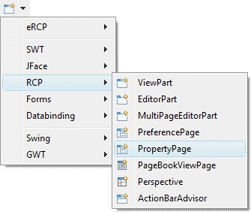
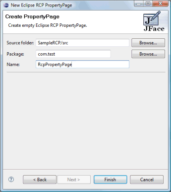
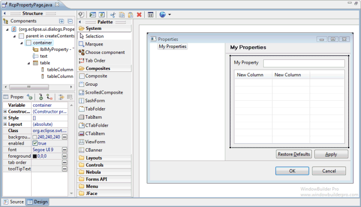

<html>

<head>
<title>RCP PropertyPage Wizard</title>
<link href="../../../book.css" rel="stylesheet" type="text/css">
</head>

<body>

<h1>RCP PropertyPage Wizard</h1>

<table border="0" cellpadding="0" cellspacing="0" width="700">
  <tr>
    <td>Subclasses of the Eclipse RCP <b>PropertyPage</b> class can be
              created using the <b>RCP PropertyPage </b>wizard. The wizard can be
              selected from the drop down Designer wizard menu or from the
              Eclipse <b>New</b> wizard.
              <p>To use the wizard, select the project source folder and package
              to contain the class. Then enter the class name and hit the <b>Finish</b>
              button.</td>
  </tr>
  <tr>
    <td><br>
	&nbsp;
      </td>
  </tr>
  <tr>
    <td>
	<p><br>
	The wizard generates the following code.<blockquote>
                <dl>
                  <dt><font face="Courier" size="2" color="#7f0055"><b>import</b></font><font face="Courier New" size="2"> org.eclipse.swt.SWT;<o:p>
                    </o:p>
                    </font></dt>
                  <dt><font face="Courier" size="2" color="#7f0055"><b>import</b></font><font face="Courier New" size="2"> org.eclipse.swt.widgets.Composite;<o:p>
                    </o:p>
                    </font></dt>
                  <dt><font face="Courier" size="2" color="#7f0055"><b>import</b></font><font face="Courier New" size="2"> org.eclipse.swt.widgets.Control;<o:p>
                    </o:p>
                    </font></dt>
                  <dt><font face="Courier" size="2" color="#7f0055"><b>import</b></font><font face="Courier New" size="2"> org.eclipse.ui.dialogs.PropertyPage;<o:p>
                    </o:p>
                    </font></dt>
                  <dt><font face="Courier New" size="2">&nbsp;<o:p>
                    </o:p>
                    </font></dt>
                  <dt><font face="Courier" size="2" color="#7f0055"><b>public class</b></font><font face="Courier New" size="2"> 
					RcpPropertyPage
                    </font><font face="Courier" size="2" color="#7f0055"><b>extends</b></font><font face="Courier New" size="2"> PropertyPage {<o:p>
                    </o:p>
                    </font></dt>
                  <dt><font face="Courier New" size="2">&nbsp;&nbsp;&nbsp;
                    </font><font face="Courier" size="2" color="#7f0055"><b>public</b></font><font face="Courier New" size="2"> 
					RcpPropertyPage() {<o:p>
                    </o:p>
                    </font></dt>
                  <dt><font face="Courier New" size="2">&nbsp;&nbsp;&nbsp; &nbsp;&nbsp;&nbsp;&nbsp;</font><font face="Courier" size="2" color="#7f0055"><b>super</b></font><font face="Courier New" size="2">();<o:p>
                    </o:p>
                    </font></dt>
                  <dt><font face="Courier New" size="2">&nbsp;&nbsp;&nbsp; }<o:p>
                    </o:p>
                    </font></dt>
                  <dt><font face="Courier New" size="2">&nbsp;&nbsp;&nbsp; </font>
				<font size="2" color="#646464" face="Courier">@Override</font><font face="Courier" size="2" color="#3f7f5f"><br>
				</font><font face="Courier New" size="2">&nbsp;&nbsp;&nbsp;
                    </font><font face="Courier" size="2" color="#7f0055"><b>public</b></font><font face="Courier New" size="2"> Control createContents(Composite parent) {<o:p>
                    </o:p>
                    </font></dt>
                  <dt><font face="Courier New" size="2">&nbsp;&nbsp;&nbsp;
                    &nbsp;&nbsp;&nbsp;&nbsp;Composite container = 
                    </font><font face="Courier" size="2" color="#7f0055"><b>new</b></font><font face="Courier New" size="2"> Composite(parent, SWT.</font><font size="2" color="#0000c0" face="Courier"><i>NULL</i></font><font face="Courier New" size="2">);<o:p>
                    </o:p>
                    </font></dt>
                  <dt><font face="Courier New" size="2">&nbsp;&nbsp;&nbsp; &nbsp;&nbsp;&nbsp;&nbsp;</font><font face="Courier" size="2" color="#7f0055"><b>return</b></font><font face="Courier New" size="2"> 
					container;<o:p>
                    </o:p>
                    </font></dt>
                  <dt><font face="Courier New" size="2">&nbsp;&nbsp;&nbsp; }<o:p>
                    </o:p>
                    </font></dt>
                  <dt><font face="Courier New" size="2">}</font></dt>
                </dl>
      </blockquote>
      <p>Property Pages can use any widget
      and layout manager.</p>
      <p></p>
    </td>
  </tr>
</table>
</body>
</html>
